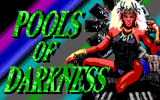
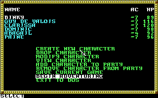
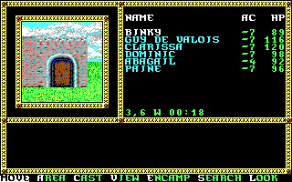
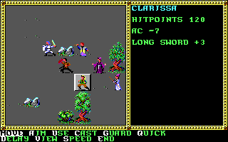

名稱：黑暗之池 (Pools of Darkness，英文版)
簡介：SSI 1991年出品的角色扮演遊戲，為光芒之池系列的第四部，台灣由智冠代理進口。
遊戲以直角3D畫面呈現，戰鬥時則以3D斜角畫面呈現，採策略團體回合制方式進行 [待補]。




備註：本版為1.1版
保護：手冊單字，破解碼：
GAME.OVR
74 03 E9 2A FE C6 06 BD C5 01 BF EE 7E 1E 57 BF EE 7D 1E 57 9A 74 0B 25 08 75 06
EB -- -- -- -- -- -- -- -- -- -- -- -- -- -- -- -- -- -- -- -- -- -- -- -- -- 00
檔案：pod10.rar = 1.0版（智冠版）